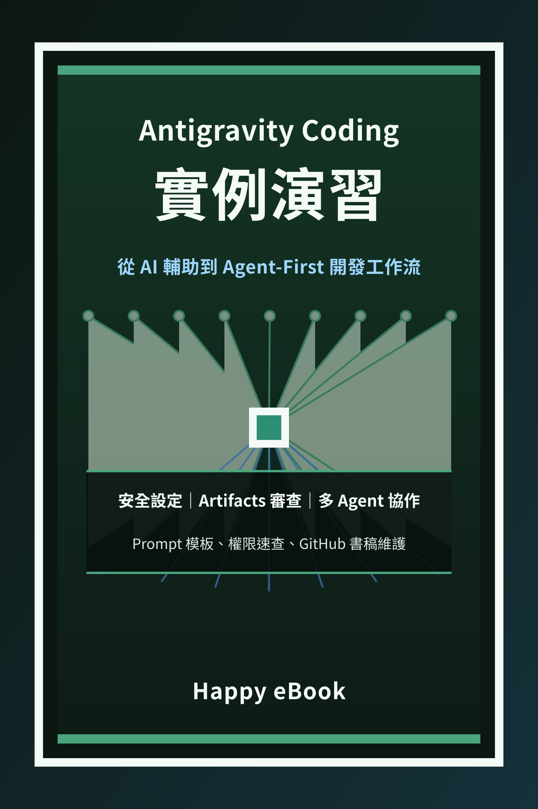

電子書
Antigravity Coding 實例演習：從 AI 輔助到 Agent-First 開發工作流
不是一本只教 prompt 的書，而是一本教你如何管理 agent 工作流的實作指南

Antigravity Coding 實例演習：從 AI 輔助到 Agent-First 開發工作流
不是一本只教 prompt 的書，而是一本教你如何管理 agent 工作流的實作指南
《Antigravity Coding 實例演習》不是一本只教 prompt 的書，而是一本教你如何管理 agent 工作流的實作指南。本書從 agent-first coding 的基本觀念開始，帶讀者建立低風險 workspace、設定保守權限，並用 Todo App 練習第一個可委派、可驗證的 coding 任務。接著，你會學會如何用 Artifacts、diff summary、browser screenshot、recording、test evidence 與 residual risks 來審查 agent 的完成聲明，而不是只相信「已完成」三個字。中段章節聚焦常見工程場景：bug report 如何變成可重現任務、UI 實作如何透過 browser evidence 驗證、API 任務如何先定義 contract、全端出版工作台如何避免過度 scaffold。後段章節則進入進階使用：多 agent ownership、權限與安全邊界、團隊導入規則，以及如何讓 agent 協助維護 GitHub 書稿 repo。
作品介紹；目前未提供購買或試閱入口